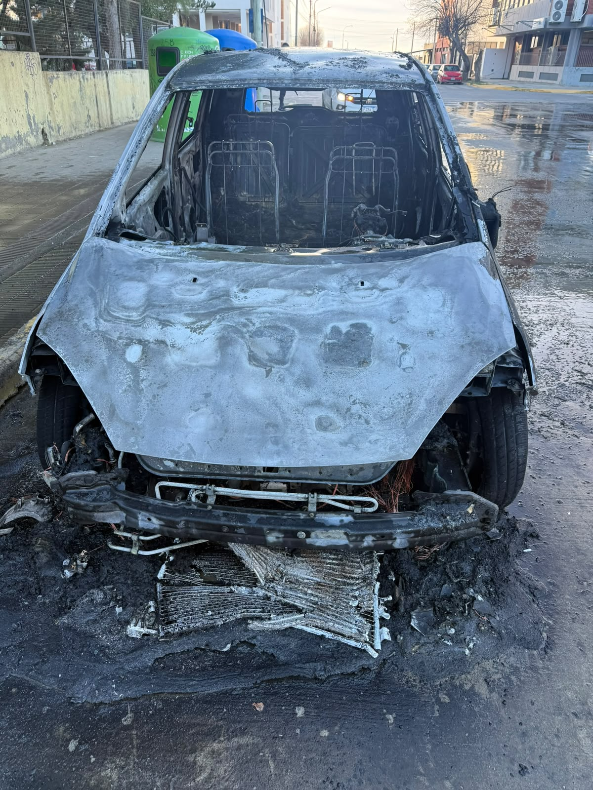
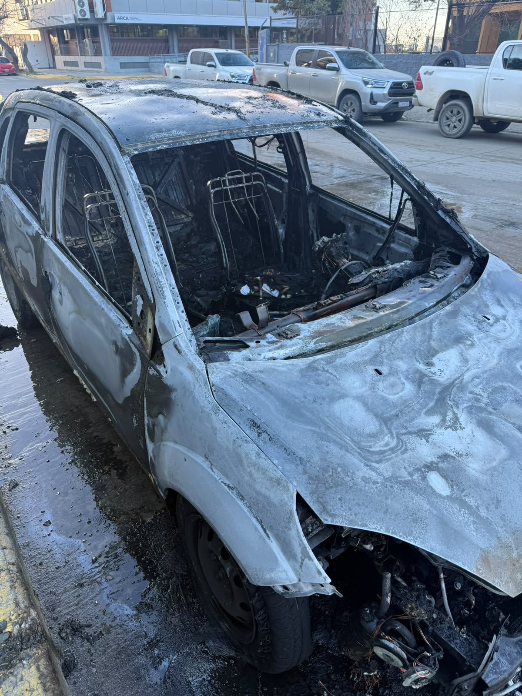
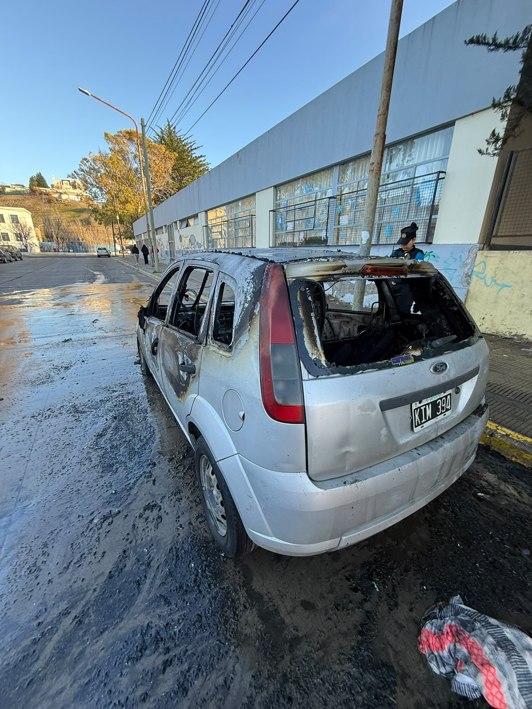
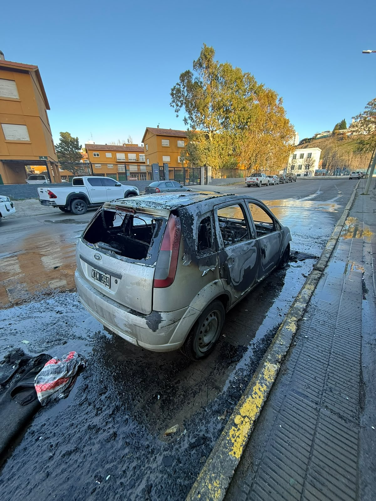

Contraste Visual: Antes vs. Después
Comparativa directa del estado del vehículo KIM394. A la izquierda, fotografías de la publicación original de venta que muestran el excelente estado de conservación del coche; a la derecha, el estado de destrucción total por incendio tras la intervención del taller.
Frente del Vehículo
Comparación del frente del Ford Fiesta. El contraste evidencia la magnitud del daño térmico y físico concentrado en la zona del motor.


Perfil Derecho vs. Interior Destruido
Comparación del perfil exterior derecho en excelentes condiciones de conservación frente al estado de destrucción total del habitáculo interior posterior al incendio.
.jpeg)

Lateral Delantero Izquierdo
Comparación del perfil delantero izquierdo. Detalla el punto de propagación inicial del fuego desde el compartimento hacia la carrocería exterior.
.jpeg)

Lateral Trasero Izquierdo
Comparación visual del perfil lateral izquierdo: el coche en condiciones óptimas de conservación original frente al estado de destrucción y deformación del sector tras el siniestro.
.jpeg)

Lateral Trasero Derecho
Comparación de la sección trasera derecha. Evidencia el avance térmico general que destruyó los vidrios, ópticas y chapa posterior.



.jpeg)
.jpeg)